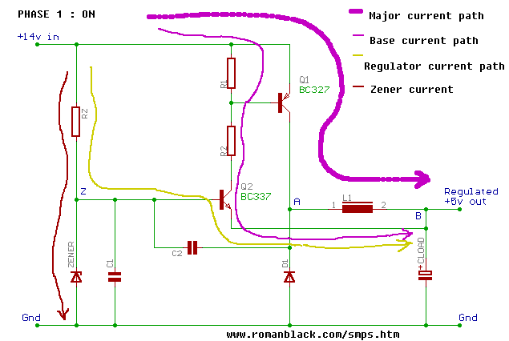

PHASE 1 · ON · lasts about 4.5 µs
Q1 is on and the inductor current climbs
Q2's base sits at 5.6 V (held there by the zener) and its emitter is at the output, a little under 5 V. That is more than the ~0.6 V a silicon base-emitter junction needs, so Q2 conducts. Its collector current has to come from somewhere: it flows from the +14 V rail, out through Q1's emitter and base, down through R2, through Q2 and into the output. That is the base current path in the drawing. Current flowing out of a PNP transistor's base turns it on, so Q1 saturates and connects node A almost directly to +14 V.
With 13.8 V on one end of L1 and 5 V on the other, the inductor has about 8.8 V across it. An inductor responds to a steady voltage with a steadily rising current: dI/dt = V/L = 8.8 V / 220 µH = 0.04 A per microsecond. That is the major current path. Once the inductor current exceeds what the load is drawing, the surplus charges CLOAD and the output voltage creeps up.
Meanwhile RZ carries about 8.4 mA from the supply to node Z. A tiny part (well under a milliamp) goes into Q2's base (the regulator current path); the rest flows down through the zener, which is what holds Z at 5.6 V.
- Q1
- saturated (on)
- Q2
- on, VBE ≈ 0.62–0.65 V
- D1
- reverse biased, 14 V across it, off
- V(A)
- ≈ +13.8 V
- V(Z)
- 5.6 V, clamped by zener
- V(B)
- rising slowly, toward 4.98 V
- I(L1)
- rising, ≈ 0.15 → 0.33 A